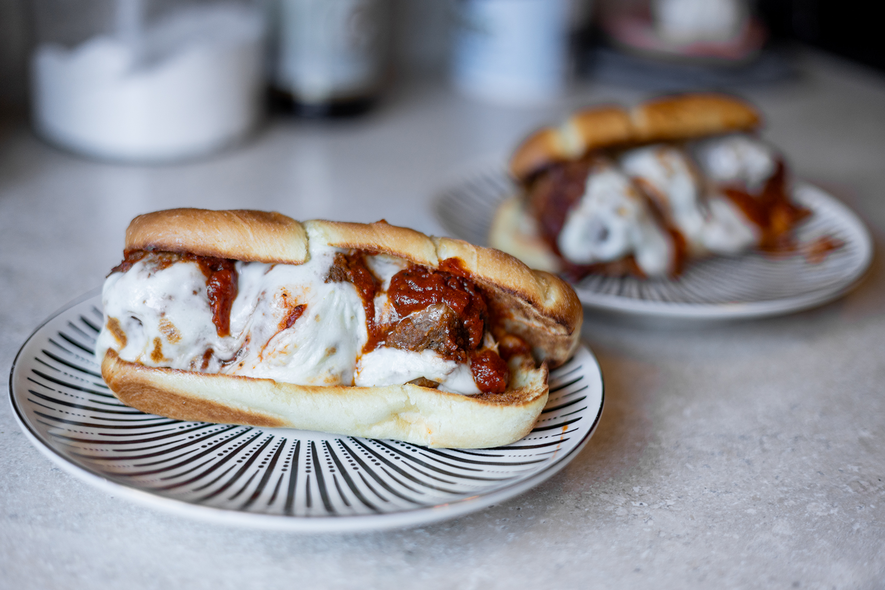
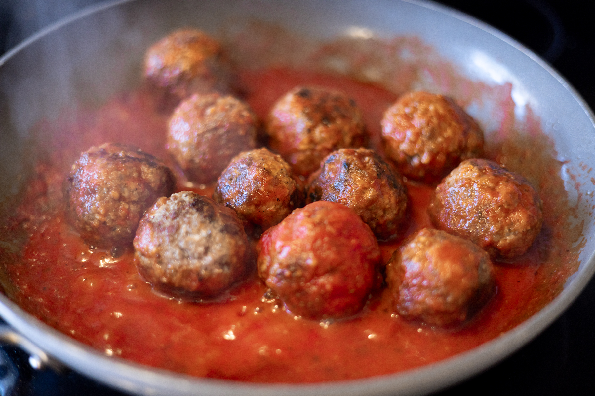

Meatball Subs
Meatball subs are a nostalgic meal that brings me back to my childhood. They were a rare treat in my household, but I try to make them fairly often as a treat to myself. The bonus is, the left over meatballs make a perfect spaghetti and meatball dish later in the week. Warning: not a dignified and clean eating experience.

Ingredients
- 1lb ground beef
- 1/2 cup panko breadcrumbs
- 1/4 cup grated Parmesan Cheese
- 2 cups marinara sauce
- Hoagie or sandwich rolls
- Sliced Mozzarella Cheese
- 1 tbsp Oregano
- 1 tsp Basil
- 1 tsp (or measure with your heart) Garlic Powder
- Salt and Pepper
- Olive or Avocado Oil
Instructions
- In a large bowl, combine the ground beef, panko breadcrumbs, Parmesan cheese, and seasonings. Tip: wear gloves and use your hands to mix everything together well.
- Form your meatballs, about an inch to 1.5 inches in diameter. This should yield about 12.
- In a skillet, heat some oil over medium-high heat. Add the meatballs and cook until browned on all sides, about 2 minutes each side.

- Once all sides are browned, add the marinara sauce and simmer, covered, for 8-10 minutes
- Set oven to boil, and toast your sandwich rolls whie opened. The goal is a light toasting to help the bread resist getting soggy in the next step.
- Assemeble your subs: lay 2 slices of the mozzeralla cheese across the roll. It should cover all the bread's surface to add to the integrety of the bread. Top with 2-3 meatballs and a couple tablespoons of the marinara sauce. place under the boiler until cheese is melted.
- Let cool for a few minutes and enjoy! This pairs well with a light salad as it is a hearty main dish.